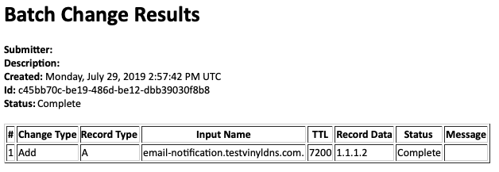

API Configuration Guide
Note: ALL configuration assumes a vinyldns namespace. For example, sqs settings would be under vinyldns.sqs.
Configuration
- Configuration Overview
- Configuration API Server
- Queue Configuration
- Database Configuration
- Cryptography
- Additional Configuration Settings
- Full Example Config
There are a lot of configuration settings in VinylDNS. So much so that it may seem overwhelming to configure vinyldns to your environment. This document describes the configuration settings, highlighting the settings you are most likely to change. All of the configuration settings are captured at the end.
It is important to note that the api and portal have different configuration. We will review the configuration
for each separately.
Configuration Overview
How do we config?
All configuration is done using Typesafe Config. It provides a means to specifying default configurations, and overriding the configured values in a number of ways:
- The default configuration provides “safe” default values for all configuration. This makes it possible for you
to only change the configuration values that you need to, and assume the default for the rest. This can
typically be found in a file named
reference.conf. The Typesafe Config library manages populating unspecified values for you automatically. - You can override the
reference.conffile by providing your ownapplication.conffile when the system starts up. We will review how to do that in the sections that follow. - You can override individual configuration properties when the application starts up using standard jvm arguments.
For example, you can specify
-Dmy.config.value=42, and that will override both application.conf and reference.conf (defaults) - You can further override configuration properties with environment variables. The Typesafe Config provides special syntax that allows you to use environment variables. You can make the environment variable optional (meaning use it if it is there) or required (fail to start up without the environment variable). We will illustrate use of environment variables in this guide.
Using Environment Variables
We strongly recommend that you use environment variables in particular for secrets. Laying down environment variables in a flat file is a security vulnerability for your installation. To demonstrate environment variable usage, here is a following snippet…
queue.settings {
access-key = ${AWS_ACCESS_KEY}
secret-key = ${AWS_SECRET_ACCESS_KEY}
signing-region = ${SQS_REGION}
service-endpoint = ${SQS_ENDPOINT}
queue-name = ${SQS_QUEUE_NAME}
}
In the example, if any of the values in ${xxx} are not found in the environment, the application will not start up!
Configuring API Server
The API configuration has a lot of values, the important ones reviewed here. There are several configuration settings that are specific to your environment.
The most important configuration is around your system dependencies. Presently, these are your settings for:
AWS SQSAWS DynamoDBMySQL
We are actively working on supporting different message queues and data stores. Look for those to become available shortly
Queue Configuration
VinylDNS supports both SQS and MySQL queue implementations.
There are a couple of implementation-dependent settings that need to be specified:
messages-per-poll: Number of messages retrieved in a single queue receive request. Valid values are 1 through 10 (default).polling-interval: Interval to delay between each poll for messages.
If using SQS, be sure to follow the AWS SQS Setup Guide first to get the values you need to configure here.
If using MySQL, follow the MySQL Setup Guide first to get the values you need to configure here.
The following in a sample SQS config:
vinyldns {
queue {
class-name = "vinyldns.sqs.queue.SqsMessageQueueProvider"
messages-per-poll = 10
polling-interval = 250.millis
# connection information to SQS
settings {
# AWS access key and secret.
access-key = "x"
secret-key = "x"
# Regional endpoint to make your requests (eg. 'us-west-2', 'us-east-1', etc.). This is the region where your queue is housed.
signing-region = "x"
# Endpoint to access queue
service-endpoint = "http://vinyldns-elasticmq:9324/"
# Queue name. Should be used in conjunction with service endpoint, rather than using a queue url which is subject to change.
queue-name = "vinyldns"
}
}
}
The following is a sample MySQL queue config:
queue {
class-name = "vinyldns.mysql.queue.MySqlMessageQueueProvider"
polling-interval = 250.millis
messages-per-poll = 10
settings = {
name = "vinyldns"
driver = "org.mariadb.jdbc.Driver"
migration-url = "jdbc:mariadb://localhost:19004/?user=root&password=pass"
url = "jdbc:mariadb://localhost:19004/vinyldns?user=root&password=pass"
user = "root"
password = "pass"
# see https://github.com/brettwooldridge/HikariCP
connection-timeout-millis = 1000
idle-timeout = 10000
max-lifetime = 30000
maximum-pool-size = 5
minimum-idle = 0
my-sql-properties = {
cachePrepStmts=true
prepStmtCacheSize=250
prepStmtCacheSqlLimit=2048
rewriteBatchedStatements=true
}
}
}
Database Configuration
VinylDNS supports both DynamoDB and MySQL backends. You can enable all repos in a single backend, or have a mix of the two. For each backend, you need to configure the table(s) that should be loaded.
You must have all of the following required API repositories configured in exactly one datastore. Some repositories are implemented in DynamoDB, all repositories have MySQL support:
| Repository | DynamoDB support | MySQL support |
|---|---|---|
| BatchChange | X | |
| Group | X | X |
| GroupChange | X | X |
| Membership | X | X |
| RecordSet | X | |
| RecordSetChange | X | X |
| User | X | X |
| UserChange | X | X |
| Zone | X | |
| ZoneChange | X | X |
If using MySQL, follow the MySQL Setup Guide first to get the values you need to configure here.
If using DynamoDB, follow the AWS DynamoDB Setup Guide first to get the values you need to configure here.
vinyldns {
# this list should include only the datastores being used by your instance
data-stores = ["mysql", "dynamodb"]
mysql {
# this is the path to the mysql provider. This should not be edited
# from the default in reference.conf
class-name = "vinyldns.mysql.repository.MySqlDataStoreProvider"
settings {
# the name of the database, recommend to leave this as is
name = "vinyldns"
# the jdbc driver, recommended to leave this as is
driver = "org.mariadb.jdbc.Driver"
# the URL used to create the schema, typically this will be without the "database" name
migration-url = "jdbc:mariadb://localhost:19002/?user=root&password=pass"
# the main connection URL
url = "jdbc:mariadb://localhost:19002/vinyldns?user=root&password=pass"
# the user to connect to MySQL
user = "root"
# the password to connect to MySQL
password = "pass"
## see https://github.com/brettwooldridge/HikariCP for more detail on the following fields
# the maximum number of connections to scale the connection pool to
maximum-pool-size = 20
# the maximum number of milliseconds to wait for a connection from the connection pool
connection-timeout-millis = 1000
# the minimum number of idle connections that HikariCP tries to maintain in the pool
minimum-idle = 10
# the maximum number of milliseconds that a connection is can sit idle in the pool
idle-timeout = 10000
# The max lifetime of a connection in a pool. Should be several seconds shorter than the database imposed connection time limit
max-lifetime = 600000
# controls whether JMX MBeans are registered
register-mbeans = true
# my-sql-properties allows you to include any additional mysql performance settings you want.
# Note that the properties within my-sql-properties must be camel case!
# see https://github.com/brettwooldridge/HikariCP/wiki/MySQL-Configuration for guidance
my-sql-properties {
prepStmtCacheSize = 300
prepStmtCacheSqlLimit = 2048
cachePrepStmts = true
useServerPrepStmts = true
rewriteBatchedStatements = true
}
}
repositories {
# all repositories with config sections here will be enabled in mysql
zone {
# no additional settings for repositories enabled in mysql
}
batch-change {
}
user {
}
record-set {
}
}
}
dynamodb {
# this is the path to the DynamoDB provider. This should not be edited
# from the default in reference.conf
class-name = "vinyldns.dynamodb.repository.DynamoDBDataStoreProvider"
settings {
# AWS_ACCESS_KEY, credential needed to access the SQS queue
key = "x"
# AWS_SECRET_ACCESS_KEY, credential needed to access the SQS queue
secret = "x"
# DynamoDB url for the region you are running in, this example is in us-east-1
endpoint = "https://dynamodb.us-east-1.amazonaws.com"
# DynamoDB region
region = "us-east-1"
}
repositories {
# all repositories with config sections here will be enabled in dynamodb
record-change {
# Name of the table where recordsets are saved
table-name = "recordChangeTest"
# Provisioned throughput for reads
provisioned-reads = 30
# Provisioned throughput for writes
provisioned-writes = 20
}
zone-change {
table-name = "zoneChangesTest"
provisioned-reads = 30
provisioned-writes = 20
}
group {
table-name = "groupsTest"
provisioned-reads = 30
provisioned-writes = 20
}
group-change {
table-name = "groupChangesTest"
provisioned-reads = 30
provisioned-writes = 20
}
membership {
table-name = "membershipTest"
provisioned-reads = 30
provisioned-writes = 20
}
}
}
}
Cryptography Settings
VinylDNS uses symmetric cryptography in order to encrypt/decrypt sensitive information in the system. This includes TSIG keys and user secrets. Cryptography is used in both the portal as well as the api.
Cryptography is pluggable, meaning you can bring your own crypto with you. All that is required is to provide an
implementation of CryptoAlgebra
using a crypto library of choice. The default implementation is NoOpCrypto, which does not do any encryption (not recommended for production).
VinylDNS provides a cryptography implementation called JavaCrypto that you can use for production. The example that follows illustrates
using the provided JavaCrypto.
If you create your own implementation, you have to build your jar and make it (and all dependencies) available to the VinylDNS API and the VinylDNS portal.
The following are the configuration settings for crypto. Notice here the only thing we see is the type. The type
is the fully qualified class name for the CryptoAlgebra you will be using. If your crypto implementation requires
additional settings, they will be configured inside the crypto element, adjacent to the type.
vinyldns {
crypto {
type = "vinyldns.core.crypto.JavaCrypto"
secret = "8B06A7F3BC8A2497736F1916A123AA40E88217BE9264D8872597EF7A6E5DCE61"
}
}
Default Zone Connections
VinylDNS has three ways of indicating zone connections:
- Global default connection applies to all zones unless overridden by one of the following connections. This configuration is required.
- Backends allows you to specify zone connection information for an individual zone by choosing a pre-configured zone connection. This configuration is optional.
- Zone level override allows you to specify zone update and transfer connection information for each zone. More information is in the Zone Model.
VinylDNS has 2 connections for each zone:
- The DDNS connection - used for making DDNS updates to the zone
- The Transfer connection - used for making AXFR requests for zone syncing with the DNS backend
VinylDNS also ties in testing network connectivity to the default zone connection’s primary server into its API health checks. A value
for the health check connection timeout in milliseconds can be specified using health-check-timeout; a default value of 10000 will
be used if not provided.
vinyldns {
# timeout for DNS backend connectivity health check
health-check-timeout = 5000
# the DDNS connection information for the default dns backend
defaultZoneConnection {
# this is not really used, but must be set, usually set to the keyName itself, or a descriptive name if you are interested
name = "vinyldns."
# the name of the TSIG key
keyName = "vinyldns."
# the TSIG secret key
key = "nzisn+4G2ldMn0q1CV3vsg=="
# the host name or IP address, note you can add a port if not using the default by settings hostname:port
primaryServer = "ddns1.foo.bar.com"
}
# the AXFR connection information for the default dns backend
defaultTransferConnection {
name = "vinyldns."
keyName = "vinyldns."
key = "nzisn+4G2ldMn0q1CV3vsg=="
primaryServer = "vinyldns-bind9"
}
}
# Zone Connection Data, ID can be specified in a zone to override the global default configuration
backends = [
{
id = "test-backend-id"
zone-connection {
name = "vinyldns."
key-name = "vinyldns."
key = "nzisn+4G2ldMn0q1CV3vsg=="
primary-server = "127.0.0.1:19001"
}
transfer-connection {
name = "vinyldns."
key-name = "vinyldns."
key = "nzisn+4G2ldMn0q1CV3vsg=="
primary-server = "127.0.0.1:19001"
}
}
]
Additional Configuration Settings
Approved Name Servers
When running a large DNS installation, allowing users the ability to self-manage zone delegations can lead to a lot of problems when not done properly. Also, allowing delegation to untrusted DNS servers can be a security risk.
To “lock down” zone delegation, you can configure name servers that you trust, so zone delegation is controlled.
The entries in the list can be host names, IP addresses, or regular expressions.
approved-name-servers = [
"172.17.42.1.",
"ddns1.foo.bar.",
".*awsdns.*"
]
Processing Disabled
The processing disabled flag can be used if doing a blue/green deployment. When processing is disabled, the VinylDNS engine will not be actively polling the message queue for messages.
processing-disabled = false | true
Color
For blue-green deployments, you can configure the color of the current node. Not applicable to every environment.
color = "green"
Version
Version of the application that is deployed. Currently, this is a configuration value.
version = "0.8.0"
Note: You can get installation information including color, version, default key name, and processing-disabled by hitting the status endpoint GET /status
HTTP Host and Port
To specify what host and port to bind to when starting up the API server, default is 9000.
rest {
host = "0.0.0.0"
port = 9000
}
Sync Delay
VinylDNS uses a “sync-delay” setting that prevents users from syncing their zones too frequently. The settings is inspected per zone, and is the number of milliseconds since the last sync to wait before allowing another sync for that zone.
sync-delay = 10000
Notifiers
VinylDNS provides the ability to send notifications via configured notifiers when a batch change is either implemented or rejected. Notifiers in VinylDNS are designed to be pluggable (ie. bring-your-own-implementation), granting users the flexibility to implement their own which can smoothly integrate into their instance.
Setup requires a notifiers key which contains all of the configured notifiers that will be used by the running
instance.
notifiers = ["email", "sns"]
E-mail notifier
Configuration for the e-mail notifier appears like the following:
email = {
# Path to notifier provider implementation
class-name = "vinyldns.api.notifier.email.EmailNotifierProvider"
settings = {
# Sender address for e-mail notifications
from = "Sender <do-not-reply@example.sender>"
smtp {
# Host SMTP server
host = "example.host"
}
}
Note that settings.from and settings.smtp are both required, though the smtp values requirements depend on the specific
exchange service that you are interfacing with.
Below is an example e-mail notification:

AWD Simple Notification Service (SNS) notifier
Configuration for the AWS SNS notifier appears like the following:
sns {
# Path to notifier provider implementation
class-name = "vinyldns.api.notifier.sns.SnsNotifierProvider"
settings {
# SNS topic Amazon Resource Name (ARN)
topic-arn = "arn:aws:sns:us-east-1:000000000000:batchChanges"
# AWS access key and secret
access-key = "vinyldnsTest"
secret-key = "notNeededForSnsLocal"
# Endpoint to access SNS
service-endpoint = "http://127.0.0.1:19006"
# Regional endpoint to make your requests (eg. 'us-west-2', 'us-east-1', etc.). This is the region where your SNS is housed.
signing-region = "us-east-1"
}
}
### Batch Manual Review Enabled <a id="manual-review" />
Configuration setting that determines whether batch changes with non-fatal errors can be reviewed rather than failing immediately.
When enabling manual review, the expectation is that a DNS technician is actively querying and addressing batch change
requests that are in a manual review state. If your process flow does not accommodate this expectation, we advise disabling
manual review.
```yaml
manual-batch-review-enabled = true
Manual Review Domains
Configuration setting that determines what Batch Change/DNS Change input names require manual review if manual-batch-review-enabled is set to true.
If manual-batch-review-enabled is set to false any input names that match entries in the configured list will be treated as fatal errors.
manual-review-domains = {
domain-list = [
"needs-review.*"
]
ip-list = [
"192.0.2.254",
"192.0.2.255",
"fd69:27cc:fe91:0:0:0:ffff:1",
"fd69:27cc:fe91:0:0:0:ffff:2"
]
zone-name-list = [
"zone.requires.review."
]
}
Scheduled Batch Changes Enabled
Configuration setting that determines if users are able to make Batch Changes with a scheduled time. manual-batch-review-enabled must be enabled as well.
If enabled, a VinylDNS administrator cannot approve the Batch Change until after the scheduled time. An administrator could also reject the Batch Change.
scheduled-changes-enabled = true
IPv6 Zone Discovery Boundaries
Configuration setting that determines the range that will be searched for in reverse IPv6 Zone Discovery. This allows you
to limit the search for what is appropriate for your organization. For example, min = 2, max = 3 will only search in
zones in the form X.X.ip6.arpa. and X.X.X.ip6.arpa.. Note the following constraints: 0 < min <= max <= 32. If your
organization only makes zone cuts at one point, you may set min == max.
The default values if omitted are min = 5, max = 20.
v6-discovery-nibble-boundaries {
min = 5
max = 20
}
Full Example Config
# The default application.conf is not intended to be used in production. It assumes a docker-compose
# setup for all of the services. Provide your own application.conf on the docker mount with your
# own settings
vinyldns {
queue {
class-name = "vinyldns.sqs.queue.SqsMessageQueueProvider"
messages-per-poll = 10
polling-interval = 250.millis
settings {
# AWS access key and secret.
access-key = "x"
secret-key = "x"
# Regional endpoint to make your requests (eg. 'us-west-2', 'us-east-1', etc.). This is the region where your queue is housed.
signing-region = "x"
# Endpoint to access queue
service-endpoint = "http://localhost:9324/"
# Queue name. Should be used in conjunction with service endpoint, rather than using a queue url which is subject to change.
queue-name = "vinyldns"
}
}
# host and port the server binds to. This should not be changed
rest {
host = "0.0.0.0"
port = 9000
}
# The maximum number of records VinylDNS will load when syncing a DNS Zone
# this is to prevent possible out of memory errors when loading a Zone
# this does not stop the zone from existing in DNS, but you will not be able to manage it in VinylDNS if the number of records exceeds the max
max-zone-size = 60000
# the delay between zone syncs so we are not syncing too often
sync-delay = 10000
# crypto settings for symmetric cryptography of secrets in the system
# Note: for production systems secrets should not live in plain text in a file
crypto {
type = "vinyldns.core.crypto.NoOpCrypto"
}
# both datastore options are in use
data-stores = ["mysql", "dynamodb"]
dynamodb {
class-name = "vinyldns.dynamodb.repository.DynamoDBDataStoreProvider"
settings {
key = "x"
secret = "x"
endpoint = "http://vinyldns-dynamodb:8000"
region = "us-east-1"
}
repositories {
record-change {
table-name = "recordChange"
provisioned-reads = 30
provisioned-writes = 20
}
zone-change {
table-name = "zoneChanges"
provisioned-reads = 30
provisioned-writes = 20
}
group {
table-name = "groups"
provisioned-reads = 30
provisioned-writes = 20
}
group-change {
table-name = "groupChanges"
provisioned-reads = 30
provisioned-writes = 20
}
membership {
table-name = "membership"
provisioned-reads = 30
provisioned-writes = 20
}
}
}
mysql {
class-name = "vinyldns.mysql.repository.MySqlDataStoreProvider"
settings {
name = "vinyldns"
driver = "org.mariadb.jdbc.Driver"
migration-url = "jdbc:mariadb://localhost:19002/?user=root&password=pass"
url = "jdbc:mariadb://localhost:19002/vinyldns?user=root&password=pass"
user = "root"
password = "pass"
maximum-pool-size = 20
minimum-idle = 10
connection-timeout-millis = 1000
idle-timeout = 10000
max-lifetime = 600000
register-mbeans = true
my-sql-properties {
prepStmtCacheSize = 300
prepStmtCacheSqlLimit = 2048
cachePrepStmts = true
useServerPrepStmts = true
rewriteBatchedStatements = true
}
}
repositories {
zone {
}
batch-change {
}
user {
}
record-set{
}
}
}
# the DDNS connection information for the default dns backend
defaultZoneConnection {
name = "vinyldns."
keyName = "vinyldns."
key = "nzisn+4G2ldMn0q1CV3vsg=="
primaryServer = "vinyldns-bind9"
}
# the AXFR connection information for the default dns backend
defaultTransferConnection {
name = "vinyldns."
keyName = "vinyldns."
key = "nzisn+4G2ldMn0q1CV3vsg=="
primaryServer = "vinyldns-bind9"
}
# the max number of changes in a single batch change. Change carefully as this has performance
# implications
batch-change-limit = 1000
# notifier configuration
notifiers = ["email", "sns"]
email = {
# Path to notifier provider implementation
class-name = "vinyldns.api.notifier.email.EmailNotifierProvider"
settings = {
# Sender address for e-mail notifications
from = "Sender <do-not-reply@example.sender>"
smtp {
# Host SMTP server
host = "example.host"
}
}
sns {
# Path to notifier provider implementation
class-name = "vinyldns.api.notifier.sns.SnsNotifierProvider"
settings {
# SNS topic Amazon Resource Name (ARN)
topic-arn = "arn:aws:sns:us-east-1:000000000000:batchChanges"
# AWS access key and secret
access-key = "vinyldnsTest"
secret-key = "notNeededForSnsLocal"
# Endpoint to access SNS
service-endpoint = "http://127.0.0.1:19006"
# Regional endpoint to make your requests (eg. 'us-west-2', 'us-east-1', etc.). This is the region where your SNS is housed.
signing-region = "us-east-1"
}
}
# true if you want to enable manual review for non-fatal errors
manual-batch-review-enabled = true
# true if you want to allow Batch Changes to be scheduled. manual-batch-review-enabled must also be true.
scheduled-changes-enabled = true
# types of unowned records that users can access in shared zones
shared-approved-types = ["A", "AAAA", "CNAME", "PTR", "TXT"]
# FQDNs / IPs that cannot be modified via VinylDNS
# regex-list: list of regular expressions matching any FQDN that are not allowed to be modified by this VinylDNS instance
# ip-list: list of IP addresses that cannot be modified by this VinylDNS instance
high-value-domains = {
regex-list = [
"high-value-domain.*"
ip-list = [
"192.0.2.252",
"192.0.2.253",
"fd69:27cc:fe91:0:0:0:0:ffff",
"fd69:27cc:fe91:0:0:0:ffff:0"
]
}
# FQDNS / IPs / zone names that require manual review when submitted through Batch Change/DNS Change
# Treated as a fatal error if manual review is not enabled
manual-review-domains = {
domain-list = [
"needs-review.*"
]
ip-list = [
"192.0.2.254",
"192.0.2.255",
"fd69:27cc:fe91:0:0:0:ffff:1",
"fd69:27cc:fe91:0:0:0:ffff:2"
]
zone-name-list = [
"zone.requires.review."
]
}
# Zone Connection Data
backends = [
{
id = "test-backend-id"
zone-connection {
name = "vinyldns."
key-name = "vinyldns."
key = "nzisn+4G2ldMn0q1CV3vsg=="
primary-server = "127.0.0.1:19001"
}
transfer-connection {
name = "vinyldns."
key-name = "vinyldns."
key = "nzisn+4G2ldMn0q1CV3vsg=="
primary-server = "127.0.0.1:19001"
}
}
]
}
# Akka settings, these should not need to be modified unless you know akka http really well.
akka {
loglevel = "INFO"
loggers = ["akka.event.slf4j.Slf4jLogger"]
logging-filter = "akka.event.slf4j.Slf4jLoggingFilter"
logger-startup-timeout = 30s
}
akka.http {
server {
# The time period within which the TCP binding process must be completed.
# Set to `infinite` to disable.
bind-timeout = 5s
# Show verbose error messages back to the client
verbose-error-messages = on
}
parsing {
# akka-http doesn't like the AWS4 headers
illegal-header-warnings = on
}
}